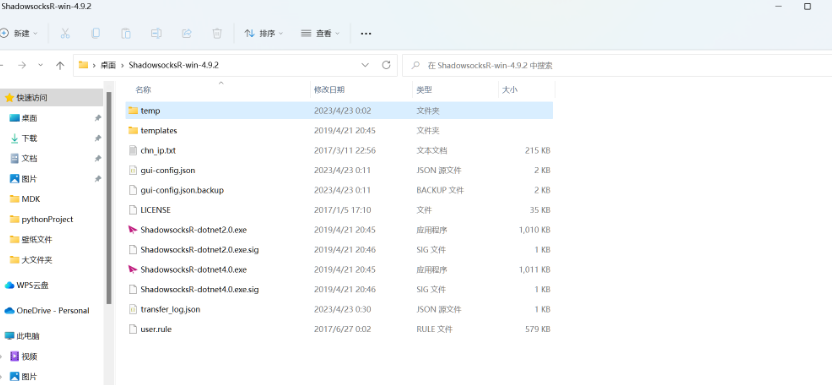

科学上网
2023-10-03
1 min read

先放一张跳墙成功的画面：
科学上网难吗？
结论：很简单！！！

首先是我在配置代理时候发现的几个好的站点：如下
科学上网主要有两个代理方法，但实际内核应该是一样的：
这里有关于两个不同的翻墙方法的说明链接
第一个：
第二个：
参考链接：SSR配置说明 ssr链接方式
如何翻墙啊，说了那么多。
第一步：下载
下载链接
蓝色款（不推荐，本文也不采用）： 然后点击zip下载即可。ss的好处是没被墙，可以直接到git上下载。
然后点击zip下载即可。ss的好处是没被墙，可以直接到git上下载。
红色款（强烈推荐！！！）：这里我直接放上zip，因为国内无法下载，我已经提前翻墙下载好咯。

下好后：
先复制下面的链接，然后点击ShadowssocksR-dotnet4.0.exe！！！！
首先准备好ssr链接。这个方法最简单。
ssr://Y20xLWhrLmh1dGFvbm9kZTIudG9wOjEyNDA1OmF1dGhfYWVzMTI4X3
NoYTE6Y2hhY2hhMjAtaWV0ZjpodHRwX3NpbXBsZTpTSFZVWVc5RGJHOTFaQS8_b
2Jmc3BhcmFtPU16WmhNV0V6TWpVd05TNXRhV055YjNOdlpuUXVZMjl0JnByb3RvcGFyYW0
9TXpJMU1EVTZTSEF6VlVVNE5YTmhWMjl2UjFOTlJnJnJlbWFya3M9NmFhWjVyaXZJQzBnU1VWUVRDQXRJ
Rk5UTDFOVFVpQXRJREExJmdyb3VwPTVhU0g1NVNvVVZIdnZKb3pORFF6T1RVMk5qRXk
这里我们选择用SSR,影梭的粉红色飞机。
 出现飞机图标后，左键点击它！！！
出现飞机图标后，左键点击它！！！
 选择剪贴板导入SSR链接。
选择剪贴板导入SSR链接。
代理规则设置为全局：
A
选择PAC为绕过常见即可。
接下来就可以愉快上网啦！